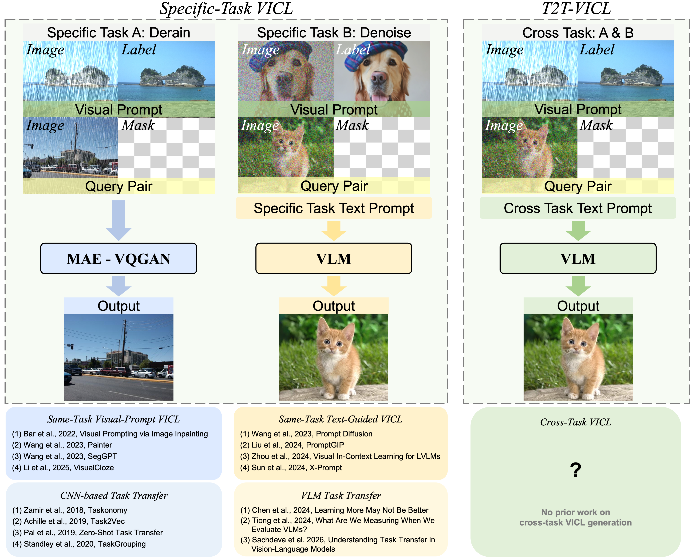
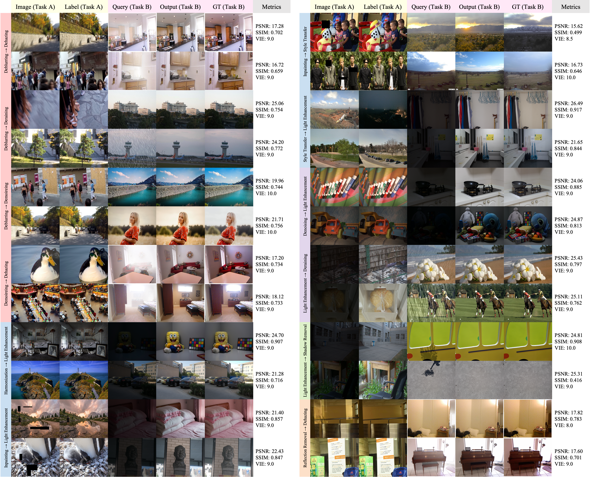
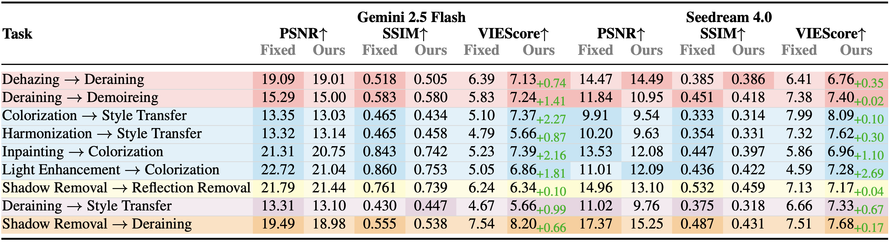
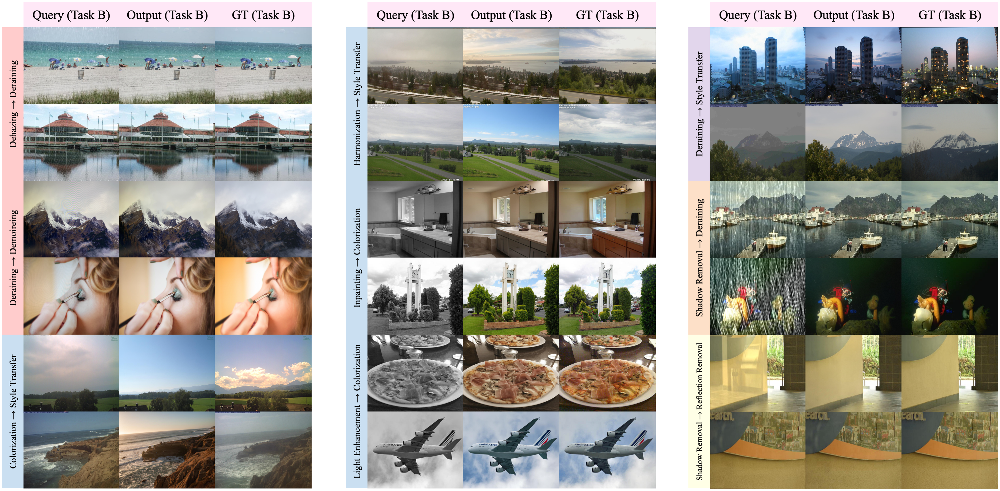

Motivation
Can visual in-context learning work when the demonstration and query come from different tasks?
Visual in-context learning (VICL) allows a model to infer an image transformation from input-output demonstrations without updating parameters. Existing VICL methods usually assume that the demonstration pair and the query belong to the same task. In practice, the available visual example can be mismatched: a user may provide a deraining example while the query requires dehazing, or a reflection-removal pair while the target is shadow removal.
This mismatch makes VICL ambiguous. The model must decide whether to imitate the demonstrated transformation or infer the target transformation from the query image. T2T-VICL is motivated by the observation that low-level vision tasks share latent relationships such as artifact suppression, contrast recovery, color adjustment, and illumination correction, and that these relationships can often be expressed more clearly in language than in raw pixels.

Main Contributions
T2T-VICL turns mismatched visual demonstrations into implicit task-difference prompts.
- Cross-task VICL formulation and benchmark. We formulate cross-task visual in-context learning for low-level vision and introduce a benchmark with implicit cross-task descriptions for studying how VLMs generalize across mismatched visual demonstrations.
- VLM -> sVLM -> VLM teacher-student pipeline. A large teacher VLM generates implicit task-relation descriptions, and a lightweight Qwen3-VL-4B student learns to generate content-dependent prompts for frozen image-editing VLMs.
- Score-based inference framework. Candidate outputs are selected with a hybrid evaluation strategy that combines attribution-enhanced prompting, visual instruction scoring, and IQA metrics.
Method
Framework: implicit relationship generation, knowledge transfer, and score-based inference.
T2T-VICL is a collaborative pipeline that leverages both large and small VLMs. A large Qwen2.5-VL-32B-Instruct teacher observes two paired tasks and produces structured implicit descriptions covering image content, visual changes, and task differences without explicitly naming the tasks. These descriptions are filtered for diversity and used as supervision for a Qwen3-VL-4B-Instruct student.
At inference time, the student only receives a Task A input-output demonstration and a Task B query. It generates an implicit prompt that guides a frozen image-editing VLM, such as Gemini-2.5-Flash, to perform the target transformation. The final output is selected from multiple candidates using VIEScore together with PSNR and SSIM.

Dataset
12 low-level vision tasks across restoration, removal, and generation/enhancement.
The benchmark covers classic degradation problems, removal tasks, and generation/enhancement tasks. For each task pair, the teacher VLM produces implicit text relations; after semantic clustering and de-duplication, the dataset keeps 2,000 diverse descriptions per pair.
Inference Example
The implicit prompt resolves what the fixed prompt leaves ambiguous.
Both the fixed-prompt and T2T-VICL settings receive the same visual inputs: a Task A input-output pair and a Task B query. The fixed prompt only states the structure of the task. T2T-VICL first asks the trained sVLM to produce a content-dependent implicit prompt, then passes that prompt and the images to the frozen VLM.

Experiments
Top-tier cross-task results on Gemini 2.5 Flash and Seedream 4.0.
Table 3 compares twelve representative task pairs with a fixed-prompt baseline. Across these top-tier pairs, at least two of the three metrics consistently outperform the baseline for both models, while the remaining metric stays close. VIEScore improves throughout, highlighting the effectiveness of implicit prompt-driven generalization.

The qualitative examples below show how Gemini adapts across diverse cross-task pairs under the implicit prompt. The examples cover restoration-oriented pairs as well as generation/enhancement pairs, showing that the same prompting mechanism can transfer across perceptually related and more distant low-level tasks.

Second-Tier Results
VIEScore captures semantic consistency where PSNR and SSIM can be less decisive.
Across another nine task pairs, T2T-VICL consistently improves VIEScore over the fixed-prompt baseline on both Gemini and Seedream. PSNR or SSIM may decrease for several pairs, especially when the target task has one-to-many ambiguity such as colorization or style transfer. The paper therefore treats VIEScore as the primary signal for these second-tier cases.

The corresponding qualitative results remain visually consistent in most cases. These examples explain why a VIEScore gain can still indicate better task performance even when strict pixel-aligned metrics are slightly lower.

Additional Backbones
The prompt-transfer mechanism is evaluated beyond Gemini and Seedream.
The appendix evaluates open-source image-editing backbones including FLUX.2-dev, OmniGen 2, Qwen-Image-Edit, and FireRed. These models support multi-image inputs and edited-image outputs, making them compatible with the VICL setting. The results show that the T2T-VICL prompt mechanism is not tied to a single final generator.

Same-Task Ablation
Implicit prompt enhancement also scales to the traditional same-task VICL setting.
The ablation study compares same-task VICL with a fixed prompt against same-task VICL with an implicitly enriched prompt generated through a T2T-VICL-style pipeline. On Gemini, prompt enhancement improves many PSNR, SSIM, and VIEScore entries across the evaluated tasks.
| Task | Same-task ICL + Fixed | Same-task ICL + Enh. | ||||
|---|---|---|---|---|---|---|
| PSNR | SSIM | VIE | PSNR | SSIM | VIE | |
| Deblurring | 17.51 | 0.529 | 4.69 | 19.29 | 0.578 | 4.30 |
| Dehazing | 12.47 | 0.510 | 6.78 | 12.68 | 0.511 | 6.92 |
| Demoireing | 14.98 | 0.574 | 7.41 | 15.89 | 0.596 | 7.57 |
| Deraining | 19.61 | 0.563 | 7.31 | 19.86 | 0.575 | 8.00 |
| Colorization | 21.18 | 0.788 | 6.51 | 20.68 | 0.755 | 7.29 |
| Harmonization | 19.88 | 0.648 | 6.65 | 20.18 | 0.662 | 6.61 |
| Inpainting | 18.18 | 0.544 | 8.31 | 18.81 | 0.547 | 8.65 |
| Light Enhancement | 12.27 | 0.482 | 8.26 | 14.00 | 0.574 | 8.92 |
| Style Transfer | 12.96 | 0.452 | 6.69 | 13.08 | 0.446 | 6.42 |
| Reflection Removal | 20.13 | 0.718 | 5.84 | 22.25 | 0.766 | 5.90 |
| Shadow Removal | 18.72 | 0.334 | 7.47 | 18.58 | 0.333 | 8.31 |
Conclusion
T2T-VICL probes the boundaries of cross-task transfer in visual in-context learning.
T2T-VICL enables collaboration among multiple VLMs through an automatic reasoning mechanism. By converting heterogeneous visual demonstrations into implicit text prompts, the framework studies how VLMs jointly reason and adapt across tasks without task-specific fine-tuning of the final image-editing model.
Citation
BibTeX
@article{xia2025t2tvicl,
title={T2T-VICL: Cross-Task Visual In-Context Learning via Implicit Text-Driven VLMs},
author={Xia, Shao-Jun and Zhang, Huixin and Tu, Zhengzhong},
journal={arXiv preprint arXiv:2511.16107},
year={2025}
}